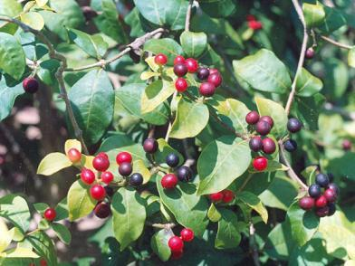

Tên khác
Tên thường dùng: ba gạc lá to, lạc tọc, san to,a gạc lá to, hơ rác, ka day (Ba Na), phu mộc
Tên thuốc: Reserpin
Tên khoa học: Rauwolfia Verticillata (Lour) Baill.
Họ khoa học: Trúc đào (Apocynaceae)
Cây ba gạc

Mô tả
Cây thấp, cao 1-1,5m, thân nhẵn, có nốt sần. Lá mọc vòng 3 lá một, có khi 4-5 lá, hình mác, dài 6-11cm, rộng 1,5-3cm. Hoa hình ống, mầu trắng, phình ở họng, mọc thành xim, tán ở kẽ lá. Quả đôi, hình trứng, khi chín mầu đỏ tươi. Toàn cây có nhựa mủ. Mùa hoa: Tháng 4-6. Mùa quả: tháng 7-10.
Phân bố, thu hái:
Thường mọc hoang ở vùng rừng núi Việt Nam: Cao Bằng, Lạng Sơn, Lào Cai
Vào mùa thu, đông, đào rễ về, rửa sạch đất, phơi hoặc sấy khô. Cần chú ý bảo vệ lớp vỏ vì lớp vỏ chứa nhiều hoạt chất nhất.
Bộ phận dùng:
Rễ và vỏ rễ.
Bào chế
– Có thể dùng tươi, khô hoặc nấu thành cao
Bảo quản:
Để nơi khô ráo, thoáng, Bào chế rồi đậy kín
Thành phần hoá học:
Trong rễ và lá có Alcaloid (0,9-2,12% ở rễ, 0,72 – 1,69 ở lá) trong đó quan trọng nhất là 1 Alcaloid gọi là Rauwolfia A, công thức thô C25H28N2O2, còn có Reserpin, Ajmalin, Ajmalixin và secpentin (theo NCTVVTV.Nam và Dược Liệu).
Tác dụng dược lý:
Đối với huyết áp: dùng nước sắc Ba Gạc nghiên cứu trên thỏ và chó thấy có tác dụng giảm áp rõ với liều 0,5/kg thân thể súc vât (Bộ môn sinh l{ đại học y dược Hà Nội 1960).
+Đối với tim: trên tim ếch cô lập và tại chỗ thấy nước sắc Ba Gạc làm chậm nhịp tim(do Ajmalin). Trên hệ mạch ngoại biên của thỏ không thấy có tác dụng trên mạch máu ngoại biên
. +Trên ruột thỏ cô lập thấy liều nhẹ làm tăng nhu động ruột. +Trên hệ thần kinh trung ương thấy không làm giảm sốt. +Có tác dụng trấn tĩnh, gây ngủ (do Reserpin, Retxinamin).
Reserpin được coi là Alcaloid quan trọng nhất, đại biểu cho dược tính của Ba Gạc. Hai tác dụng dược lý quan trọng của Reserpin được xử dụng trong điều trị là hạ huyết áp và an thần. Reserpin làm hạ huyết áp cả trên súc vật gây mêhoặc không gây mê. Tác dụng này xuất hiện chậm và không dài. Cơ chế tác dụng hạ áp là do làm cạn dần kế hoạch dự trữ chất dẫn truyền trung gian Noradrenalin trong các dây thần kinh giao cảm, được coi như hiện tượng cắt hệ thần kinh giao cảm bằng hóa chất. Reserpin không có tác dụng làm liệt hạch, có tác dụng làm chậm nhịp tim, làm dãn các mạch máu dưới da.
Đối với thần kinh trung ương, Reserpin có tác dụng ức chế, gây trấn tĩnh rõ, giống là các dẫn chất Phenothiazin
Đối với mắt, Reserpin có tác dụng thu nhỏ đồng tử 1 cách rõ rệt (là 1 trong những triệu chứng sớm nhất sau khi dùng thuốc). Reserpin còn làm sa mi mắt, làm thư dãn mi mắt thứ 3 (Nictitating membrane) của mèo và chó.
Đối với hệ tiêu hóa: Reserpin làm tăng nhu động ruột và bài tiết phân.
Đối với thân nhiệt: sau khi dùng Reserpin, có sự rối loạn về điều hòa thân nhiệt.
Đối với hệ nội tiết: Reserpin có tác dụng kích thích vỏ tuyến thượng thận giải phóng các Corticoid. Có tác dụng kháng lợi niệu yếu. Trên chuột cống cái, Reserpin làm ngừng chu kz động dục, ức chế sự phóng noãn. Trên chuột đực, ức chế sự phân tiết Androgen.
Vị thuốc ba gạc
(Công dụng, liều dùng, tính vị, quy kinh...)
Tác dụng:
Thanh nhiệt hoạt huyết, giải độc, giáng huyết áp. Nước sắc Ba gạc có tác dụng làm giảm huyết áp có nguồn gốc trung ương, làm tim đập chậm, lại có tác dụng an thần và gây ngủ.
Ứng dụng lâm sàng của vị thuốc tỳ bà diệp
Chiết xuất các alcaloid (reserpin, ajmalin, alcaloid toàn phần) dùng dưới dạng viên nén chữa cao huyết áp. Ajmalin dùng chữa loạn nhịp tim dưới dạng thuốc viên và thuốc tiêm.
Ðược dùng trị huyết áp cao đau đầu, mất ngủ, choáng váng, đòn ngã, dao chém, sởi, ngoại cảm thấp nhiệt, động kinh, rắn cắn, ghẻ lở. Hiện nay ta chế thuốc dưới dạng cao lỏng, chứa 1,5% alcaloid toàn phần, 1g cao bằng 1g vỏ rễ để chữa cao huyết áp và làm thuốc an thần.
Tham khảo
Kiêng ky:
Không nên dùng Reserpin và các chế phẩm từ Ba Gạc trong các trường hợp dạ dầy tá tràng bị loét, nhồi máu cơ tim, hen suyễn …
Bài thuốc
Reserpin: viên nén 0,0001g, 0,00025g và 0,0005g. Thuốc tiêm 5mg/2ml.
Viên Rauviloid (2mg Alcaloid toàn phần của R. serpentina), liều dùng cho bệnh huyết áp cao là 2-4mg/ngày.
Viên Raudixin (bôt rễ R. serpentina) 50-100mong, liều dùng trung bình hàng ngày là 200-400mg.
Trồng trọt:
Ba gạc ưa khí hậu ôn hoà, nhiệt độ trung bình 22-23oC. Cây sống ở nơi ánh sáng yếu, nhưng trồng ở chỗ rãi nắng, cây vẫn sống được. Cây ưa đất pha cát, ẩm, nhiều mùn và thoát nước, chịu được úng nhưng chỉ trong thời gian ngắn. Những chỗ đất kho cằn khong thích hợp với Ba gạc.
Có thể trồng bằng hạt hay hom thân cành. Hạt tươi có tỷ lệ mọc cao hơn hạt khô. Khi quả chín, ngắt từng quả, ngâm nước độ 10 giờ. Sau đó, chà sát bỏ thịt quả và hạt lép. Hạt tốt chimg trong nước. Đem hạt ngâm trong nước ấm 40oC (1 sôi, 3 lạnh) trong 10-12 giờ. Vớt hạt để ráo nước rồi đem gieo. Thu hạt đến đau gieo ngay đến đó. Gieo hạt vào mùa thu, cs thể đánh trồng vào mùa xuân (tháng 3-4). Thời vụ này thích hợp và tỷ lệ cây sống cao. Có thể phơi khô hạt, cất nơi cao ráo, thoáng mát.
Chọn đất tiện tưới tiêu nước, đảm bảo đát luôn ẩm, tơi xốp, độ pH = 5-6,5 để làm vườn ươm. Làm đất nhỏ, lên luống cao 15- 20cm, mặt luống rộng 80cm. Sau đó tiến hành gieo hạt. Gieo theo hàng cách nhau 20cm hoặc gieo vãi, hàng cách nhau 2-3cm, gieo xong lấp đất dày 1cm, phủ rơm rạ hoặc cỏ khô để giữ ẩm. Khi hạt mọc đều, bỏ rơm rạ và đảm bảo đất luôn ẩm và sạch cỏ. Nếu cây còi cọc, lá vàng, có thể tưới thúc phân chuồng loãng hoặc phân đạm.
Ngoài nânh giống bằng hạt, có thể nhân bằng hom thân cnhf. Kỹ thuật làm vườn ươm tương tự như gieo hạt. Chọn cành bánh tẻ, chặt thành đoạn 15-20cm. Gốc hom nên chặt hơi vát. Cắm cành chếch 45o và để hở ngọn hom 2-3cm. Khoảng cách cành giâm 20 x 10cm. Sau đó nén chặt đất, phủ luống bằng rơm rạ, tưới nước giữ ẩm và đảm bảo luôn sạch cỏ. Sau 7-10 ngày, cành bắt đầu mọc mầm, và 15-20 ngày bắt đầu mọc rễ. Khi mầm mọc dài 3-5cm, có thể thúc bằng nước phân chuồng hay phân đạm. Nhân giống bằng phương pháp giâm cành chỉ giải quyết giống tại chỗ. Thời vụ ươm và trồng tương tự như gieo hạt.
Khi đưa ra trồng để sản xuất, cần chọn khu đất ven đồi, rừng hoặc thung lũng pha cát, nhiều mùn ẩm. Nếu khai hoang, phải tiến hành làm đất trước 1 tháng. Cuốc đất sâu độ 20cm, để ải. Khi trồng, làm đất tơi nhỏ, nhặt sạch cỏ và rễ cây. Lên luống cao khoảng 20cm, rộng 50-70cm tuỳ từng loại ba gạc. Bổ hốc sâu 15cm, bón lót 10 tấn phân chuồng trọn hoặc ủ 200kg supe lân/ ha. Trộn phân và đất cho đều rồi tiến hành trồng. Bứng cây giống đến đâu trồng ngay đến đó. Trồng với khoảng cách 50 x 50cm (đối với loài R. verticilata và R. vomitoria), 40 x 50cm hoặc 40 x 40cm đối với những loài thấp cây. Mỗi luống trồng hai hàng, trông đến đâu tưới ngay đến đó. Sau khi trồng đảm bảo đất luôn luôn ẩm và làm cỏ vun xới mỗi tháng một lần. Khi cây giao tán có thể ngừng. Mùa đông năm thứ nhất cần vun xới, làm cỏ và bón thúc 5 tấn phân chuồng để cây ngủ qua đông. Bón giữa 2 hàng cây. Sang năm thứ 2, việc chăm sóc đơn giản hơn. Thường làm cỏ vào 2 tháng 5 và 8.
Trồng Ba gạc sau 2 năm có thể thu hoạch.
Khả năng di thực: Cây Ba gạc có khả năng phát triển tốt ở những vùng có khí hậu mát mẻ.
Khả năng phát triển vùng chuyên canh: Có khả năng phát triển trồng ở các vùng chuyên canh. Loài này đã được khai thác làm thuốc triệt để và liên tục từ nhiều năm nay, nên hiện nay cây đã hiếm dần.
Nơi mua bán vị thuốc BA GẠC đạt chất lượng ở đâu?
Trước thực trạng thuốc đông dược kém chất lượng, nguồn gốc không rõ ràng,... xuất hiện tràn lan trên thị trường, làm ảnh hưởng tới hiệu quả điều trị cũng như ảnh hưởng tới sức khỏe của bệnh nhân. Việc lựa chọn những địa chỉ uy tín để mua thuốc đông dược là rất quan trọng và cần thiết. Vậy khách hàng có thể mua vị thuốc BA GẠC ở đâu?
BA GẠC là vị thuốc nam quý, được sử dụng rộng rãi trong YHCT. Hiện tại hầu hết các cửa hàng thuốc đông dược, phòng khám đông y, phòng chẩn trị YHCT... đều có bán vị thuốc này. Tuy nhiên người mua nên chọn những địa chỉ có uy tín, đảm bảo chất lượng, có giấy phép hoạt động để mua được vị thuốc đạt chất lượng.
Với mong muốn bệnh nhân được sử dụng những loại dược liệu đúng, chất lượng tốt, phòng khám Đông y Nguyễn Hữu Toàn không chỉ là đia chỉ khám chữa bệnh tin cậy, uy tín chất lượng mà còn cung cấp cho khách hàng những vị thuốc đông y (thuốc nam, thuốc bắc) đúng, chuẩn, đạt chuẩn chất lượng. Các vị thuốc có trong tiêu chuẩn Dược điển Việt Nam đều được nghành y tế kiểm nghiệm đạt chất lượng tiêu chuẩn.
Vị thuốc BA GẠC được bán tại Phòng khám là thuốc đã được bào chế theo Tiêu chuẩn NHT.
Giá bán vị thuốc BA GẠC tại Phòng khám Đông y Nguyễn Hữu Toàn: Gọi 18006834 để biết chi tiết
Tùy theo thời điểm giá bán có thể thay đổi.
+ Khách hàng có thể mua trực tiếp tại địa chỉ phòng khám: Cơ sở 1: Số 481 lô 22 Lê Hồng Phong, Phường Gia Viên, Thành phố Hải Phòng
+ Mua trực tuyến: Thuốc được chuyển qua đường bưu điện. Khi nhận được thuốc khách hàng thanh toán tiền COD.
Tag: cay ba gac, vi thuoc ba gac, cong dung ba gac, Hinh anh cay ba gac, Tac dung ba gac, Thuoc nam
Thaythuoccuaban.com Tổng hợp
*************************